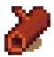

Iedere houtbewerker heeft verschillende keuzes aan materiaal waarmee hij/zij te werk kan gaan. Hier kunt u de kenmerken van verschillende soorten hard- en zachthout vinden om u te helpen welk hout het meest geschikt is voor uw project.
Hardhoutsoorten
Eikenhout
Familie: Fagaceae
Afkomst: Europa en Noord-Amerika
Hardheid: 
Eikenhout is een van de meest bekende hardhoutsoorten in de Nederlandse houtbewerking. Hard maar duurzaam!
Mahonie
Familie: Meliaceae
Afkomst: Midden- en Zuid Amerika
Hardheid:
Mahonie is in Nederland geïntroduceerd via de West-Indische koloniën in de 17e en 18e eeuw. Sindsdien wordt het gezien als een symbool van luxe.
Iroko
Familie: Moraceae
Afkomst: Afrika
Hardheid:
Iroko heeft na bewerking een prachtige roodbruine glans, kenmerkend voor houtsoorten uit het Afrikaanse regenwoud. Let bij de bewerking wel op mogelijke irritaties vanwege loskomende deeltjes.
Merbau
Familie: Leguminosae
Afkomst: Zuidoost-Azië
Hardheid:
Sterk en duurzaam, Merbau is uiterst geschikt voor het maken van mooie deuren en kozijnen.
Esdoorn
Familie: Sapindaceae
Afkomst: gehele noordelijk halfrond
Hardheid:
Esdoorn komt veel voor in de houtbewerking. Stevig en goed geprijsd: dit is een uitstekende keuze voor grotere projecten.
Ebbenhout
Familie: Ebenaceae
Afkomst: Indisch subcontinent & Sri Lanka
Hardheid:
Donker en massief, ebbenhou is een prachtige hardhoutsoort dat al eeuwen wordt gebruikt voor duurzame kunstwerken
Carya
Familie: Juglandaceae
Afkomst: Noord-Amerika & China
Hardheid:
Carya, ook wel okkenoot genoemd, wordt vanwege de elasticiteit vooral gebruikt voor het maken van drumstokken, handbogen, wandelstokken en hamerstelen
Wilg
Familie: Salicaceae
Afkomst: gehele noordelijk halfrond
Hardheid:
De wilg is te vinden in onder andere Nederland en België. Stevig en snelgroeiend, een ervaren houtbewerker kan hier mooie projecten van maken. Let wel goed op de twistende draad van het hout.
Padoek
Familie: Leguminosae
Afkomst: Afrika
Hardheid:
Afrikaanse Padoek heeft ene prachtige feloranje kern, dat een goede flair kan geven aan menig project. Let bij de aanschaf wel ok een milieuvriendelijk merk.
Azobé
Familie: Ochnaceae
Afkomst: West-Afrika
Hardheid:
Azobé is bijzonder duurzaam en hard. In Nederland worden stijgerpalen veelal hiervan gemaakt, omdat de paalworm deze houtsoort niet aanvreet.
Noten
Familie: Juglandaceae
Afkomst: geheel noordelijk halfrond
Hardheid:
De bekende notenboom brengt ons stevig en duurzaam hout. Geschikt voor binnen- en buitenprojecten. Let wel op mogelijke noesten.
Lindehout
Familie: Malvaceae
Afkomst: geheel noordelijk halfrond
Hardheid:
Lindehout is de meest betrouwbare houtsoort voor beginnende houtsnijders. Zacht en met weinig noesten: het is geschikt voor prachtige kleine binnenprojecten.
Kers
Familie: Rosaceae
Afkomst: Noord-Amerika, Europa & Klein-Azië
Hardheid:
De zoete kers heeft een mooie rode houtkleur, dat met veel detail bewerkt kan worden. Let voor buitenprojecten wel op de juiste afwerking.
Abachi
Familie: Sterculiaceae
Afkomst: West-Afrika
Hardheid:
Abachihout is prima te gebruiken voor het maken voor grote projecten. Licht qua gewicht en hardheid, Abachi werkt goed in de hand. Gebruik deze houtsoort echter niet voor kleinere binnenprojecten.
Purperhart
Familie: Leguminosae
Afkomst: Midden- en Zuid-Amerika
Hardheid:
Purperhart heeft een bijzondere en herkenbare paarachtige kleur. Daarom wordt het regelmatig gebruikt bij projecten als gitaren, meubels en luxevloeren. Varianten die in Nederland gebruikt worden zijn over het algemeen geïmporteerd vanuit Suriname.
Zachthoutsoorten(naaldhout)
Dennenhout
Familie: Pinaceae
Afkomst: Europa en Noord-Amerika
Hardheid:
Dennenhout is een bekende houtsoort voor menig Nederland. Goed bruikbaar voor buitenprojecten als schuttingen of palen!
Cederhout
Familie: Cypressidae
Afkomst: Libanon
Hardheid:
Al sinds de oudheid is ceder gebruikt voor het afwerken van kunstvoorwerpen. Prachtig om te gebruiken, maar wel prijzig vergeleken met alternatieven.
Vuren
Familie: Pinaceae
Afkomst: Europa
Hardheid:
Mooi voor simpelere projecten en het grote werk. Vuren is geschikt voor langdurige buitenprojecten.
Grenenhout
Familie: Pinaceae
Afkomst: noord-Europa
Hardheid:
Grenenhout wordt veelal gebruikt voor meubilair en wordt regelmatig verward met dennenhout. Hoewel de twee op elkaar lijken, is grenenhout veerkrachtiger dan dennenhout.
Douglashout
Familie: Pinaceae
Afkomst: noord-Europa & noord-Amerika
Hardheid:
Oorspronklijk overgewaaid vanuit Amerika, de Douglasspar is een vast onderdeel geworden voor Nederlandse bossen. Bewerking van Douglas is meest geschikt met betrekking tot machinale werkmethoden.